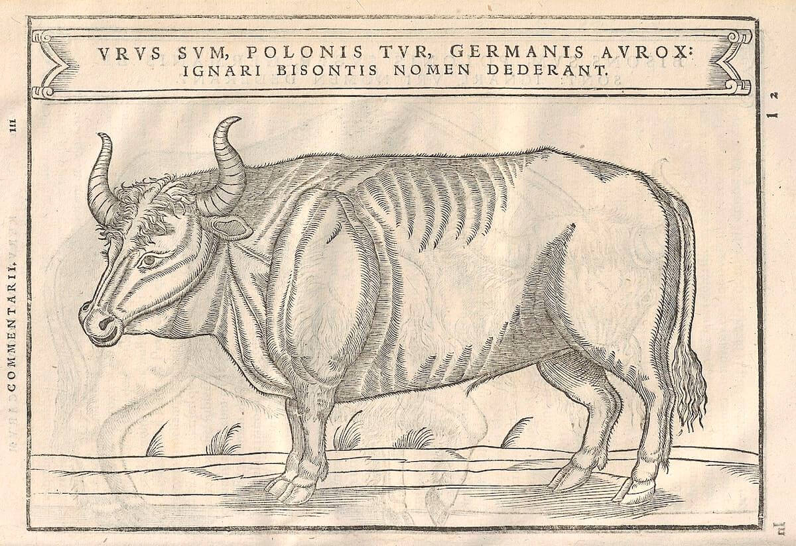

Once widespread in Asia, Europe, and North Africa, the aurochs is believed to be a wild ancestor of domestic cattle. One of the largest herbivores in the Holocene, their grazing of nuts, twigs, and grass shaped historical ecosystems, and their manure supported vast kingdoms of insects and fungi. A prominent participant in human history --- and one of the richest food sources before the advent of agriculture --- aurochs were among the earliest figures to appear in Paleo- and Neolithic cave paintings and petroglyphs, and feature across Egyptian reliefs, Bronze Age figurines, and classical literature.
